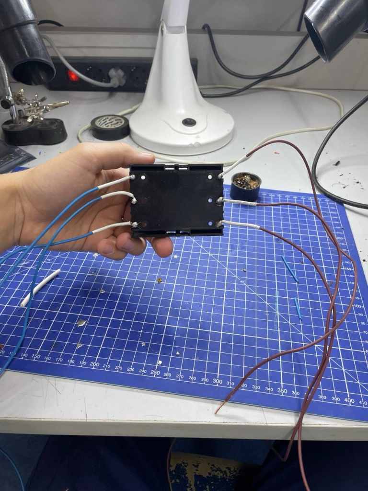
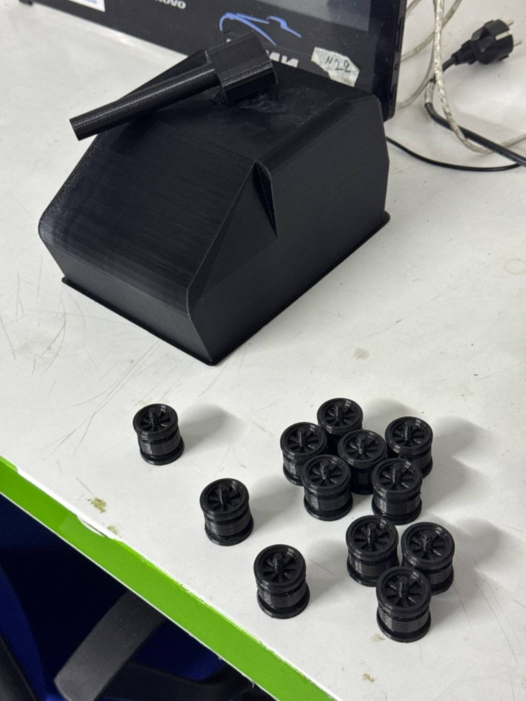
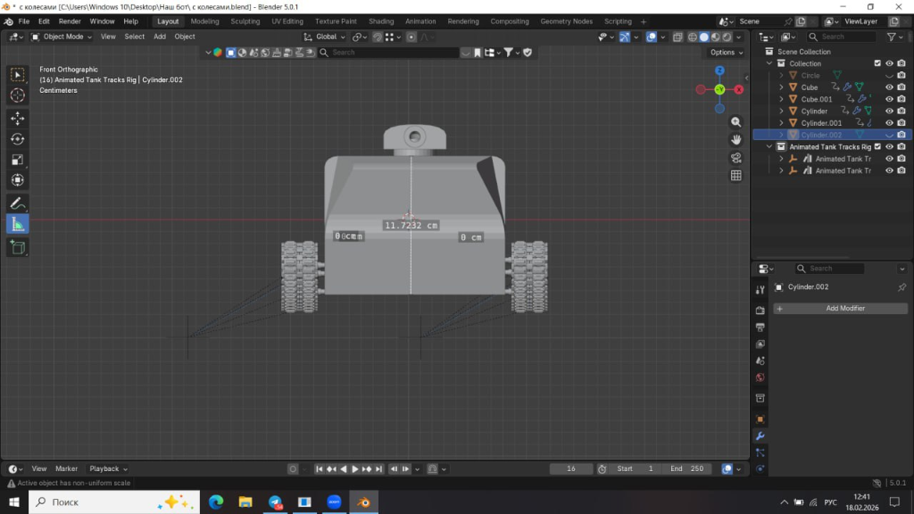

Журнал прогресса
Этап 3: Пайка электронных компонентов и сборка схемы
На этом этапе мы приступили к практической реализации электрической части проекта. Была проведена пайка контактных проводов к драйверам двигателей L298N и сборка схемы питания от аккумуляторов 18650.

Особое внимание уделили надежности контактов, так как при движении платформы возможны вибрации. Следующим шагом будет программирование ESP32.
Этап 2: 3D-печать деталей ходовой части
Успешно завершена печать первых партий деталей. Мы распечатали опорные колеса (катки) для гусениц, а также базовую платформу корпуса.

Печать производилась из прочного пластика, чтобы выдержать вес аккумуляторов и электроники. Детали прошли постобработку и готовы к финальной сборке.
Этап 1: Проектирование 3D-модели корпуса
Работа над проектом началась с разработки концепта внешнего вида робота. Была создана 3D-модель корпуса и гусеничного шасси в программе Blender.

Модель учитывает расположение всех электронных компонентов: микроконтроллера, драйверов двигателей и отсеков для аккумуляторов.